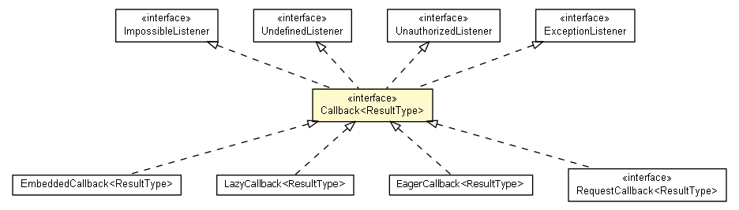

io.nextweb.operations.callbacks
Interface Callback<ResultType>

- All Superinterfaces:
- ExceptionListener, ImpossibleListener, UnauthorizedListener, UndefinedListener
- All Known Subinterfaces:
- RequestCallback<ResultType>
- All Known Implementing Classes:
- EagerCallback, EmbeddedCallback, LazyCallback
public interface Callback<ResultType>
- extends ExceptionListener, UnauthorizedListener, UndefinedListener, ImpossibleListener
onSuccess
void onSuccess(ResultType result)
hasEagerFailureListener
boolean hasEagerFailureListener()
hasEagerUndefinedListener
boolean hasEagerUndefinedListener()
hasEagerUnauthorizedListener
boolean hasEagerUnauthorizedListener()
hasEagerImpossibleListener
boolean hasEagerImpossibleListener()
Copyright © 2012. All Rights Reserved.